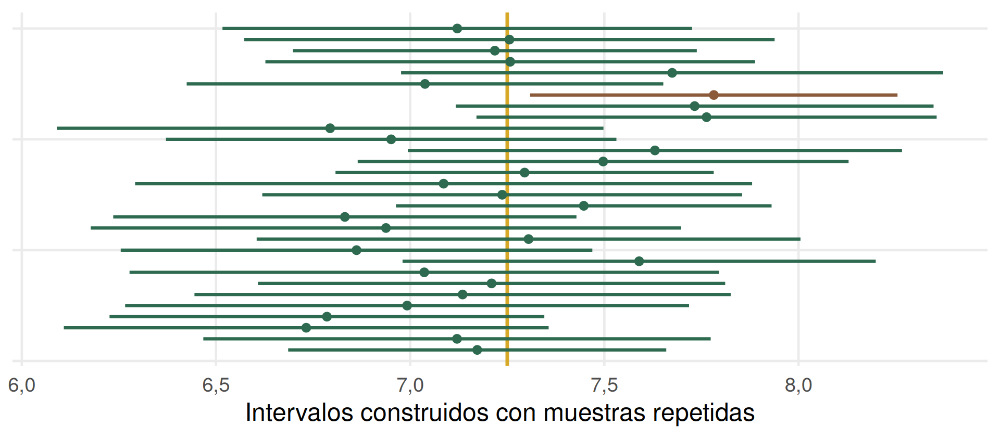
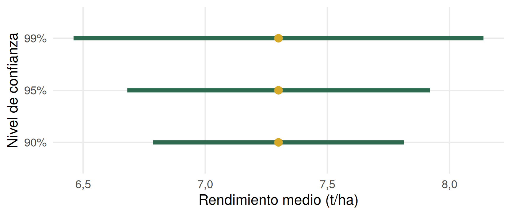

Inferencia estadística
estimación de parámetros
30 de agosto de 2026
La pregunta define la población
¿Cuál fue el rendimiento promedio de los lotes sembrados con la variedad A por los productores de una cooperativa del Valle de Lerma durante la campaña 2025/26?
La pregunta define la población de referencia.
¿Cuál es la población?
¿Y si midiéramos todos?
CENSO
Medir los 5.000 lotes
Conoceríamos la media poblacional \(\mu\) y la desviación estándar poblacional \(\sigma\).
Si conocemos toda la población, no necesitamos inferir esos parámetros.
Pero generalmente no medimos todos
¿Qué podemos aprender sobre toda la población observando sólo esos 25 lotes?
Población y muestra
POBLACIÓN
- todas las unidades
- parámetros
- \(\mu,\ \sigma,\ \pi\)
- generalmente desconocidos
MUESTRA
- algunas unidades observadas
- estadísticos
- \(\bar x,\ s,\ p\)
- calculados con los datos
Los estadísticos se usan para aprender sobre los parámetros.
Parámetro y estadístico no son lo mismo
¿Entonces \(\mu=7{,}3\text{ t/ha}\)?
Estimación puntual
Usamos un estadístico calculado en la muestra para estimar un parámetro desconocido.
Nuestra estimación puntual del rendimiento medio poblacional es 7,3 t/ha.
Otros parámetros, otros estimadores
¿Podemos confiar en 7,3?
Si tomáramos otra muestra de 25 lotes, ¿obtendríamos exactamente 7,3?
Recordemos la Clase 04
EE estimado de \(\bar X\) = \(s/\sqrt n\)
En nuestra muestra
\[\text{EE estimado de }\bar X=\frac{s}{\sqrt n}=\frac{1{,}5}{\sqrt{25}}=0{,}30\text{ t/ha}\]
El error estándar no describe la variabilidad entre lotes. Describe la precisión con la que estimamos la media.
Un número solo se queda corto
Sabemos que otra muestra habría dado otro valor. ¿Cómo comunicamos esa incertidumbre?
De un punto a un intervalo
En lugar de informar solamente un valor, construimos un rango de valores plausibles para el parámetro.
¿Cómo construimos ese intervalo?
Cuanto mayor sea la incertidumbre, más ancho deberá ser el intervalo.
¿Normal o t?
IC del 95%
\[IC_{95\%}=\bar x\pm t^*\times \text{EE estimado de }\bar X\]
El resultado
¿Qué significa realmente este 95%?
Una interpretación tentadora
“Hay un 95% de probabilidad de que \(\mu\) esté entre 6,68 y 7,92.”
¿Correcto?
Volvamos a muchas muestras

¿Qué significa entonces el 95%?
Si repitiéramos muchas veces el muestreo y construyéramos el intervalo de la misma manera, aproximadamente el 95% de esos intervalos contendría al verdadero parámetro.
La confianza pertenece al procedimiento, no a un parámetro que cambia de lugar.
¿Qué podemos decir con nuestra muestra?
Estimamos que el rendimiento medio poblacional es 7,3 t/ha, con un \(IC_{95\%}\) de 6,68 a 7,92 t/ha.
Intervalo ancho vs. estrecho
¿Cuál es más preciso?
¿De qué depende la amplitud?
Si aumenta \(n\)
Más información \(\longrightarrow\) menor incertidumbre.
Si aumenta la variabilidad
Cuando los lotes son más variables entre sí, la media se estima con menor precisión.
Si queremos más confianza

Mayor confianza exige un intervalo más amplio.
Hasta ahora usamos una población real
Pero pensemos otra pregunta
¿Cuál es el rendimiento medio que podemos esperar de la variedad A bajo condiciones productivas del Valle de Lerma?
¿Dónde están todas las unidades que forman esa población?
Población conceptual o virtual
Conjunto de resultados que podrían obtenerse al cultivar repetidamente esa variedad bajo las condiciones a las que queremos generalizar.
No siempre inferimos hacia un conjunto físico y enumerado de unidades.
La pregunta vuelve a ser fundamental
PREGUNTA A
¿Cuál fue el rendimiento de los lotes de esta cooperativa en 2025/26?
\(\longrightarrow\) población real
PREGUNTA B
¿Qué rendimiento podemos esperar de esta variedad bajo determinadas condiciones del Valle de Lerma?
\(\longrightarrow\) población conceptual
La pregunta define la población a la que pretendemos generalizar.
Del dato a la población
Lo importante de hoy
- Un estadístico muestral permite estimar un parámetro poblacional.
- El error estándar expresa la precisión de la estimación.
- Un intervalo de confianza comunica estimación + incertidumbre.
- Ningún procedimiento estadístico permite generalizar más allá de la población que el diseño y el muestreo permiten representar.
Puente a la próxima clase
HASTA AHORA
¿Cuánto vale aproximadamente un parámetro?
LUEGO
¿Los datos son compatibles con un valor determinado del parámetro o con diferencias entre poblaciones?

Andrés Tálamo - Estadística y Diseño Experimental - UNSa